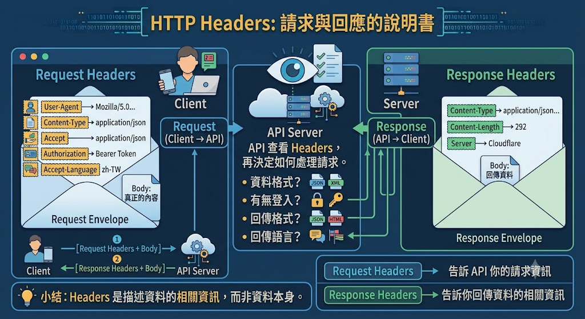

API與Requests¶
專案下載：https://github.com/kcwc1029/kcwc1029.github.io/tree/main/docs/python-notebooks/API%26Requests
API 到底是什麼？¶
- 【專有名詞】API 是什麼？｜你每天都在用，卻可能從來沒聽過？｜ 所以想知道
- API? IPA? 應用程式介面是什麼? API種類介紹 | What is API? REST? SOAP?【電腦說人話】
API 是 Application Programming Interface，中文常翻成「應用程式介面」。
用餐廳理解 API：餐廳裡：
- 你是 Client。
- 廚房是 Server。
- 菜單是 API 文件。
- 點餐窗口是 Endpoint。
- 點餐動作是 HTTP Method。
- 點餐內容是 Parameters 或 Request Body。
- 號碼牌是 Token。
- 餐點是 Response Body。
- 店員說「售完」是錯誤回應。
你不必進廚房了解每道菜如何製作，只要依菜單規則點餐。API 的價值就是把內部實作藏起來，對外提供穩定的操作方式。
API 和網頁有什麼不同？¶

因此「API－Requests」與「爬蟲－Requests」雖然都使用 Requests，思考方式不同：
- API 串接：依官方契約交換結構化資料。
- 網頁爬蟲：從面向人類的 HTML 中抽取資料。
API 可以是公開服務、公司內部服務，也可以像本教材只運作於本機。重點不是「上網」，而是兩個軟體元件透過約定介面溝通。
HTTP Request 與 Response¶
API 客戶端送出 Request，伺服器傳回 Response：

一個 Request 常包含：
- Method：想做什麼。
- URL：對哪個 endpoint 操作。
- Headers：格式、身分與追蹤資訊。
- Query Parameters：搜尋、分頁、排序條件。
- Body：POST、PUT、PATCH 要送出的資料。
一個 Response 常包含：
- Status Code：處理結果。
- Headers：內容格式、快取、版本等資訊。
- Body：JSON 資料或錯誤細節。
URL 與 endpoint¶

REST 與 Resource¶

補充：JSONPlaceholder¶
JSONPlaceholder 是一個免費提供測試用 API 的網站，專門讓開發者練習 HTTP Request、RESTful API，以及前後端串接。
簡單來說，它就像一個假的後端伺服器。你可以對它發送 GET、POST、PUT、DELETE 等請求，練習 API 操作，而不用自己架設資料庫或網站。
範例：第一個GET¶
import requests
url = "https://jsonplaceholder.typicode.com/posts/1"
try:
response = requests.get(url, timeout=5)
response.raise_for_status()
data = response.json()
print("狀態碼：", response.status_code)
print("內容類型：", response.headers.get("Content-Type"))
print("JSON 內容：", data)
print("文章標題：", data["title"])
except Exception as e:
print(e)
requests.get() 回傳的是 Response 物件，不是 JSON dict。必須呼叫 .json() 才會將 Response Body 解析成 Python 物件。
| 屬性／方法 | 用途 |
|---|---|
response.status_code |
HTTP 狀態碼 |
response.headers |
回應標頭 |
response.text |
解碼後文字 |
response.content |
原始 bytes |
response.json() |
JSON 轉 Python 物件 |
response.raise_for_status() |
4xx、5xx 時拋出例外 |
response.elapsed |
回應時間 |
response.request |
實際送出的請求 |
重要陷阱：.json() 成功只代表 body 是合法 JSON，不代表 API 操作成功。401、404、422、500 也可能回傳 JSON 錯誤，所以仍要檢查狀態碼。
Query Parameters：查詢、篩選與排序¶
Requests 會正確處理 ?、&、空白、中文與特殊符號。不要手動拼接：
可以印出 response.url，確認最後送出的網址。
import requests
url = "https://jsonplaceholder.typicode.com/comments"
params = {
"postId": 1
}
response = requests.get(url, params=params)
response.raise_for_status()
comments = response.json()
print(f"共有 {len(comments)} 筆留言\n")
for comment in comments:
print(f"留言ID：{comment['id']}")
print(f"姓名：{comment['name']}")
print(f"Email：{comment['email']}")
print("-" * 50)
Headers¶
Headers 像包裹外面的標籤，描述資料格式、身分與處理方式：

| Header | 常見用途 |
|---|---|
Accept |
客戶端希望收到的格式 |
Content-Type |
Request Body 的格式 |
Authorization |
認證資訊 |
User-Agent |
客戶端名稱與版本 |
X-Request-ID |
跨系統追蹤同一次請求 |
Idempotency-Key |
防止建立操作被重複執行 |
If-None-Match |
搭配 ETag 做條件式請求 |
headers = {
"Accept": "application/json",
"User-Agent": "MyCompanyOrderClient/1.0",
}
response = requests.get(url, headers=headers, timeout=5)
JSON與資料型態¶
補充：API分頁¶
狀態碼與錯誤模型¶
| 狀態碼 | 意義 | Client 常見處理 |
|---|---|---|
| 200 OK | 成功讀取／更新 | 解析 body |
| 201 Created | 成功建立 | 讀資料與 Location |
| 204 No Content | 成功但無 body | 不可呼叫 .json() |
| 304 Not Modified | 快取仍有效 | 沿用本機資料 |
| 400 Bad Request | 參數或 JSON 格式錯 | 修正請求 |
| 401 Unauthorized | 未認證或 Token 無效 | 更新認證 |
| 403 Forbidden | 已辨識但沒有權限 | 停止或申請權限 |
| 404 Not Found | 資源不存在 | 檢查 ID／路徑 |
| 409 Conflict | 資源狀態衝突 | 重新讀取後處理 |
| 422 Unprocessable Content | 格式合法但驗證失敗 | 修正欄位值 |
| 429 Too Many Requests | 超過用量 | 尊重 Retry-After |
| 500 Internal Server Error | Server 非預期錯誤 | 記錄、稍後有限重試 |
| 503 Service Unavailable | 暫時無服務 | 退避後有限重試 |
一致的錯誤 JSON 有助於 Client 處理：
POST¶
"""使用 POST 建立一筆文章（JSONPlaceholder 範例）。"""
import requests
url = "https://jsonplaceholder.typicode.com/posts"
post_data = {
"title": "Python API 教學",
"body": "這是一篇使用 requests 建立的文章。",
"userId": 1,
}
response = requests.post(
url,
json=post_data,
timeout=5,
)
response.raise_for_status()
print("HTTP 狀態碼：", response.status_code)
print("回應內容：")
print(response.json())
基於JSONPlaceholder做CRUD示範¶
補充：Cookie與Session¶
timeout與例外處理¶
API實作¶
實作：Dog CEO API¶
實作：PokéAPI¶
實作：水果營養查詢Fruityvice¶
(喜歡)實作：iTunes_Search_API¶
實作：Open-Meteo¶
實作：Random User¶
實作：TVMaze¶
實作：TDX運輸資料流通服務：以高雄捷運為例¶
Problem¶
恩...這邊我有先列一些方向，我希望你可以去試著做做看API相關專題：
- 🍔 食物
- 🌤️ 天氣
- 💰 金融/幣價
- 🗺️ 地圖
-
🚆 交通
-
要做網頁，套件可以跟GPT說gradio、streamlit
- 要做桌面小程式，套件可以跟GPT說customtkinter